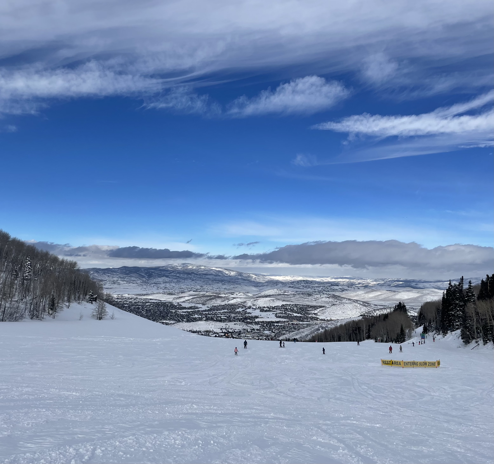
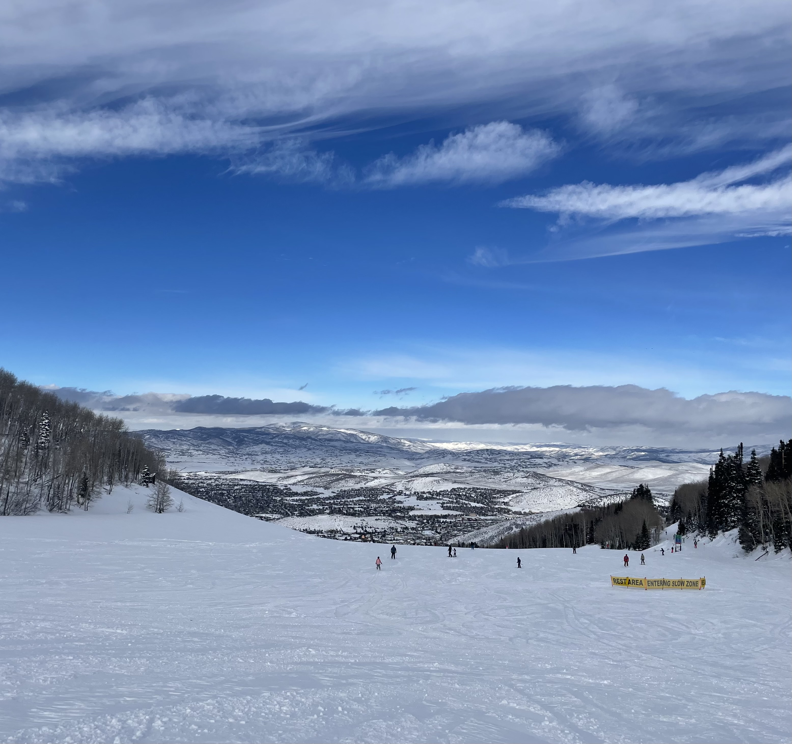

Nearly everything - from extraterrestrial phenomena to a swinging ski lift not falling off its cable can render me intrigued. This results in my thoughts, ideas, and projects varying in discipline and scope. All of these thoughts and projects require very similar skills - just through different mediums - so, I believe that my (perhaps unorthodox) breadth of projects and coursework can enable me to think outside of the box and solve novel problems with the same skills that allowed me to work through many others.
I enjoy being with great people, such as my friends and family, and experiencing and exploring the world with them.
Email: adubois1@swarthmore.edu
Resume: Here